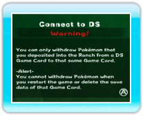
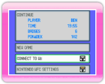
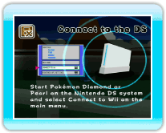
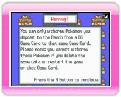
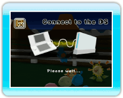
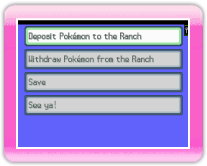
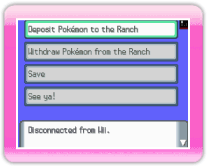
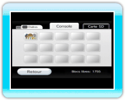

|
12
|
Procédures de connexion à une DS
|
 |
|
Tu peux déposer (ou retirer) du Ranch des Pokémon que tu as capturés dans Pokémon Diamond ou Pokémon Pearl sur la Nintendo DS. Remarques:

Lorsque tu sélectionnes Connect to DS (se connecter à la Nintendo
DS) dans le menu principal de My Pokémon Ranch, l'écran
présenté sur la droite s'affichera. Lis le message d'avertissement
et appuie sur Écran de la Wii  . .Si l'écran de My Pokémon Ranch change et affiche l'un des écrans suivants, allume ta DS après avoir inséré une carte DS Pokémon Diamond ou Pokémon Pearl. Sélectionne l'option Connect to Wii (se connecter à la Wii) du menu principal de Pokémon Diamond ou Pokémon Pearl. 
Écran de la DS 
Écran de la Wii Si tu souhaites connecter Pokémon Diamond ou Pokémon Pearl à My Pokémon Ranch, il est suggéré de sélectionner Connect to DS dans le menu de My Pokémon Ranch en premier, puis de sélectionner Connect to Wii dans le menu de Pokémon Diamond ou de Pokémon Pearl. Si tu as réussi à te connecter à la DS, les écrans suivants sont affichés sur les deux consoles (Wii & DS). Tu contrôles alors le jeu depuis la DS. Toutefois, la première fois que tu te connectes à la DS, tu
dois choisir un Mii responsable des transferts sur la Wii (My
Pokémon Ranch). (→p.17) 
Écran de la DS 
Écran de la Wii  Écran de
la DS Sur la DS, le menu principal s'affiche. Choisis une option et
appuie sur
Menu principal sur la DS
Pour utiliser la fonction Se connecter à la Nintendo DS par la suite, réfère-toi aux chapitres 13. Déposer un Pokémon ou 14. Retirer un Pokémon. Erreur de communication
Lors de la connexion, les messages d'erreur suivants peuvent parfois s'afficher. Redémarre alors les deux consoles (Wii & DS) comme indiqué. 
Écran de la DS 
Écran de la Wii 
Pokémon déposésÉcran de la Wii Les données du Ranch sont sauvegardées sur la Wii. * Si tu effaces les données, tous les Pokémon déposés seront effacés et tu ne pourras pas les retirer. Lorsque les données sont effacées, elles ne peuvent plus être récupérées. |
 |
 |
 |